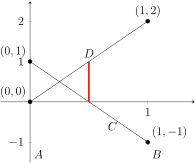
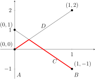

First it is good to test your instinct. Do you think she should play one of the strategies more often than the other? If so, which strategy should she play the most?
What we are really trying to find is the probability with which Player 1 plays A (or B). Since we know that the probabilities sum to one, if we can find one probability, then we know the other.
Here is one way to do this. Let \(p\) be the probability that Player 1 plays B. Let \(m\) be the payoff to Player 1. Since we are trying to find a mixed strategy for Player 1, we will pick a strategy for Player 2 and try to determine the possible payoffs for Player 1.
Let us determine some pairs \((p, m)\text{.}\)
Step 1.
Assume Player 2 plays pure strategy C.
Step 1a.
Find the probability (\(p\)) and payoff (\(m\)) if Player 1 always plays A. If Player 1 plays pure strategy A, then she never plays B. Thus the probability she plays B is 0. Hence, \(p=0\text{.}\) In the case where Player 1 plays A and Player 2 plays C, what is the payoff to Player 1? This is \(m\text{,}\) so \(m=1\text{.}\) Thus, for the strategy pair \([A, C]\) we get \((0, 1)\) for \((p, m)\text{.}\) It is important to note that \((0, 1)\) is not a payoff vector. This is common notation for any ordered pair. With payoff vectors, the ordered pair represents the payoff to each player. Here the ordered pair represents a probability of playing B and the payoff to Player 1.
Step 1b.
Find the probability (\(p\)) and payoff (\(m\)) if Player 1 always plays B. If Player 1 plays pure strategy B, then what is the probability that she plays B? Since she always plays B, \(p=1\text{.}\) In the case where Player 1 plays B and Player 2 plays C, what is the payoff to Player 1? \(m=-1\text{.}\) Thus, for the strategy pair \([B, C]\) we get \((1, -1)\) for \((p, m)\text{.}\)
Step 1c.
Now we want to know what Player 1's payoff will be as she varies the probability, \(p\text{,}\) with which she plays B. We can draw a graph where the \(x\)-axis represents to probability with which she plays B (\(p\)) and the \(y\)-axis represents the expected payoff (\(m\)). See Figure 3.2.3. Figure3.2.3.Labeled axes. Thus, when Player 1 plays only A, she is playing B with probability 0; when Player 1 plays only B, she is playing B with probability 1. It might be easier to remember if you label your graph as in Figure 3.2.3.
Step 1d.
Now we can plot the points we determined in Step 1a and Step 1b. We will connect them with a line representing Player 2's pure strategy C. See Figure 3.2.4. Figure3.2.4.Player 2's strategy C.
Before moving on, let's make sure we understand what this line represents. Any point on it represents the expected payoff to Player 1 as she varies her strategy, assuming Player 2 only plays C. In this case, we can see that as she plays B more often, her expected payoff goes down.
Now let's do the same thing, assuming Player 2 plays only D.
Step 2.
Assume Player 2 plays pure strategy D.
Step 2a.
Find the probability (\(p\)) and payoff (\(m\)) if Player 1 always plays A. If Player 1 plays pure strategy A, then what is the probability that she plays B? \(p=0\text{.}\) What is the payoff to Player 1? \(m=0\text{.}\) Thus, for the strategy pair \([A, D]\) we get \((0, 0)\) for \((p, m)\text{.}\)
Step 2b.
Find the probability (\(p\)) and payoff (\(m\)) if Player 1 always plays B. If Player 1 plays pure strategy B, then what is the probability that she plays B? \(p=1\text{.}\) What is the payoff to Player 1? \(m=2\text{.}\) Thus, for the strategy pair \([B, D]\) we get \((1, 2)\) for \((p, m)\text{.}\)
Step 2c.
Now, on our same graph from Step 1, we can plot the points we determined in Step 2a and Step 2b. We will connect them with a line representing Player 2's pure strategy D. See Figure 3.2.5. Figure3.2.5.Player 2's strategy D. Now we can see that if Player 2 plays only D, then Player 1 does best by playing only B.
So we have this nice graph, but what does it really tell us? Although we drew lines representing each of Player 2's pure strategies, Player 1 doesn't know what Player 2 will do. Suppose Player 1 only played A, while Player 2 plays an unknown mixed strategy. Then the possible payoffs for Player 1 are 1 or 0. The more often Player 2 plays C, the more often Player 1 gets 1. So the expected payoff per game for a repeated game varies between 0 and 1. We can see the possible expected values as the red line on the graph in Figure 3.2.6.
Figure3.2.6.Figure 3.2.6 of the expected payoffs for Player 1 playing only A.
Since we want to understand mixed strategies for Player 1, what would happen if Player 1 played A half the time and B half the time? In other words, what happens if \(p=1/2\text{?}\) Although we may not easily be able to see the exact values, we can represent the possible expected values on the graph in Figure 3.2.7.

Figure3.2.7.The expected payoffs for Player 1 playing B half the time.
Hopefully, you've begun to see that for each choice of \(p\text{,}\) the top line represents the highest expected value for Player 1; the bottom line represents the lowest expected value for Player 1; the area between the lines represents the possible expected values for Player 1. As we did with non-repeated games, let's look at the “worst case scenario” for Player 1. In other words, let's assume that Player 2 can figure out Player 1's strategy. Then Player 1 would want to maximize the minimum expected value. Aha! This is just looking for the maximin strategy!
Now the minimum expected value for each choice of \(p\) is given by the bottom lines on the graph, shown in red in Figure 3.2.8.

Figure3.2.8.The minimum expected payoffs for Player 1.
It should be easy to see that the maximum of the minimum expected payoffs occurs at the intersection of the two lines.
Step 3.
Find the intersection of the two lines.
Step 3a.
Find the equation for Line C. This is the line passing through the points \((0, 1)\) and \((1, -1)\text{.}\) It has slope \(-2\) and \(y\)-intercept 1. Thus, it has equation \(y=-2x+1\text{.}\) [Although the \(x\)-axis represents probability \(p\) and the \(y\)-axis represents expected payoff \(m\text{,}\) you are probably more comfortable solving equations–at least for the moment–in \(x\) and \(y\text{.}\)]
Step 3b.
Find the equation for Line D. This is the line passing through the points \((0, 0)\) and \((1, 2)\text{.}\) It has slope \(2\) and \(y\)-intercept 0. Thus, it has equation \(y=2x\text{.}\)
Step 3c.
Use substitution to find the point of intersection.
Substituting \(x=\frac{1}{4}\) back in to either original equation, say \(y=2x\text{,}\) gives us \(y=\frac{1}{2}\text{.}\) Thus, the point of intersection is \((1/4, 1/2)\text{.}\)
Step 4.
Determine Player 1's maximin mixed strategy. Recalling that the first coordinate is \(p\text{,}\) the probability that Player 1 plays B, we know that Player 1 will play B with probability 1/4, and thus, play A with probability 3/4 [\(1-1/4=3/4\)]. The expected payoff for Player 1 is 1/2. It is important to check back to your original intuition about the game from Exercise 3.2.2. Did it seem as though Player 1 should play A more often than B?
Let's make a few important observations. First, it should be clear from the graph that Player 1 expects a payoff of 1/2 NO MATTER WHAT PLAYER 2 DOES. Furthermore, since this is a zero-sum game, we know that Player 2's expected payoff is \(-1/2\text{.}\) It is important to note that this graph does not give us any information about an optimal strategy for Player 2. We will see how to find a strategy for Player 2 in the following exercises. Can you think of how you might do this?
We can use the graphical method to find the maximin and minimax mixed strategies for repeated two-person zero-sum games.
we will continue to label Player 1's strategies by \(A\) and \(B\text{,}\) and Player 2's strategies by \(C\) and \(D\text{.}\) We now want to determine the minimax strategy for Player 2. Keep in mind the payoffs are still the payoffs to Player 1, so Player 2 wants the payoff to be as small as possible.
Sketch the graph for Player 1 that we drew above. Be sure to label the endpoints of each line. Also label each line according to which strategy they represent.
Are the payoff vectors for the maximin and minimax strategies the same?
For non-repeated games we have seen that if the maximin value is the same as the minimax value, then the game has a pure strategy equilibrium. The same idea applies to mixed strategy games. If the value of the maximin strategy is the same as the value of the minimax strategy, then the corresponding mixed strategies will be an equilibrium point. Thus, your answer to Exercise 3.2.11 should tell you this game has a mixed strategy equilibrium point consisting of the maximin/ minimax strategy.
We now know that Player 2 wants to play the minimax strategy in response to Player 1's maximin strategy, so we need to find the actual mixed strategy for Player 2 to employ. Since we are minimizing Player 1's maximum expected payoff, we will continue to use the matrix representing Player 1's payoff. We will repeat the process we used for Player 1, except the \(x\)-axis now represents the probability that Player 2 will play \(D\text{,}\) and the lines will represent Player 1's strategies \(A\) and \(B\text{.}\) The \(y\)-axis continues to represent Player 1's payoff.
If Player 2 only plays \(C\text{,}\) what is the payoff to Player 1? Recall we called this \(m\text{.}\) What is the probability that Player 2 plays \(D\text{?}\) Recall we called this \(p\text{.}\) On your graph, plot the point (\(p\text{,}\) \(m\)).
If Player 2 plays only \(D\text{,}\) find \(m\) and \(p\text{.}\) Plot \((p, m)\) on the graph.
Now sketch the line through your two points. This line represents Player 1's pure strategy \(A\) and the expected payoff (to Player 1) for Player 2's mixed strategies. Label it \(A\text{.}\)
Now assume Player 1 plays only \(B\text{.}\) Repeat the steps in Exercise 3.2.13, using \(B\) instead of \(A\text{,}\) to find the line representing Player 1's pure strategy \(B\text{.}\) (Label it!)
It is important to keep in mind that although the \(x\)-axis refers to how often Player 2 will play \(C\) and \(D\text{,}\) the \(y\)-axis represents the payoff to Player 1.
Explain why we are looking for the minimax strategy for Player 2.
Show on the graph the maximum payoff that Player 1 can expect for each of Player 2's possible mixed strategies.
Show the point on the graph that represents the minimax strategy.
How often should Player 2 play \(C\text{?}\) How often should he play \(D\text{?}\) What is Player 1's expected payoff? And hence, what is Player 2's expected payoff?
Explain why each player should play the maximin/ minimax mixed strategy. In other words, explain why neither player benefits by changing his or her strategy.
Think about playing defensively and assuming the other player is the “perfect” player.
Now it may have occurred to you that since this is a zero-sum game, we could have just converted our matrix to the payoff matrix for Player 2, and found Player 2's maximin strategy. But it is important to understand the relationship between the maximin and the minimax strategies. So for the sake of practice and a little more insight, find Player 2's maximin strategy by writing the payoff matrix for Player 2 and repeating the process that we did for Player 1. Keep in mind that Player 2 is finding the probability of playing \(C\) and \(D\) rather than \(A\) and \(B\text{.}\)
Convert the payoff matrix above into the payoff matrix for Player 2. Find the maximin strategy for Player 2 using the graphical method. Be sure to include a sketch of the graph (labeled!!), the equations for the lines, the probability that Player 2 will play \(C\) and \(D\text{,}\) and the expected payoff for Player 2.
Consider the zero-sum game \(\left[\begin{matrix}-4\amp 4\\
2\amp -2
\end{matrix} \right].\)
Does this game have a pure strategy equilibrium?
Just by looking at the matrix, do you think this game will be fair? (Would you rather be Player 1 or Player 2?)
Sketch (and label!) the appropriate graph for this game.
Use you graph to determine if there is a mixed strategy equilibrium point. If there is, how often should Player 1 play each strategy? What is the expected payoff to each player?
Is this game fair? Explain. Compare your answer to (b).
Consider the zero-sum game \(\left[\begin{matrix}0\amp 1\\
1\amp -10
\end{matrix} \right].\)
Does this game have a pure strategy equilibrium?
Just by looking at the matrix, do you think this game will be fair? (Would you rather be Player 1 or Player 2?)
Sketch (and label!) the appropriate graph for this game.
Use you graph to determine if there is a mixed strategy equilibrium point. If there is, how often should Player 1 play each strategy? What is the expected payoff to each player?
Is this game fair? Explain. Compare your answer to (b).
Although it is worth working through examples by hand in order to understand the algebraic process, in the next section we will see how technology can help us solve systems of equations.